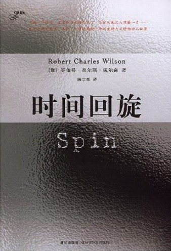

《时间回旋》

总体观点
宇宙冷酷的时间尺度与微观人类生命的情感温存构成了最悲壮的张力；当突如其来的“时间回旋”黑膜将地球置于外界时间流速亿倍的减速泡中、宣判太阳将在四十年后毁灭时，末日倒计时彻底撕裂了文明的虚伪平衡。
面对不可抗拒的终极毁灭，人类文明内部裂变为三种典型救赎范式：以杰森为代表的理性科学突破与宇宙对赌、以黛安为代表的神秘主义宗教狂热与末日献祭，以及以泰勒为代表的日常医者人道关怀与情感守望。
智能生命在宇宙尺度的繁衍超越了血肉生命的狭隘认知；冯·诺依曼机器式的“假想智慧体”并非恶意的文明掠夺者，而是如同盲目的宇宙生态网络在百亿年跨度上重构星系，并在红巨星吞噬地球的终局为人类开启了重获新生的星际拱门。
核心观点
-
1. 时间回旋黑膜：以一比一亿的时间差拉开末日倒计时
黑膜将地球物理时间与宇宙演化时间彻底割裂，地球度过一年，膜外宇宙便过去一亿年；原本数十亿年后的太阳红巨星演化，在地球视角下骤然缩短为仅剩四十年的迫降审判。
少年泰勒、杰森与黛安在豪宅后院目睹满天繁星在数秒内集体熄灭，取而代之的是由假想智慧体铺设的绝对黑幕与人造太阳模拟器。 -
2. 科学主义的极限对赌：火星生态工程与时光加速红利
近日点基金会利用时间差效应向荒凉的火星发射带有基因工程厌氧菌的探测火箭，利用火星在屏障外经历的十万年时间，在地球几周内孵化出一个完整的火星人类文明生态圈。
杰森主导发射的火星生态火箭穿透黑膜后，火星在屏障外急速演化，数十年后火星大使汪海作为十万年后火星文明的后裔造访地球，带来第四纪治疗药物。 -
3. 末日精神崩溃与原教旨宗教狂热的瘟疫式蔓延
在确定性的灭顶之灾面前，启蒙理性迅速发生雪崩式坍塌；绝望的大众将希望寄托于末世神学、末日救赎邪教与自我惩罚式的狂热仪式，以虚假的神秘主义逃避现实虚无。
黛安在成年后彻底倒向极端宗教组织，嫁给狂热布道者，在末世信徒的聚会中以麻痹式的忏悔和祈祷寻求死神降临前的虚妄解脱。 -
4. 医者的微光人道主义：在宇宙终局前坚守日常看护职责
泰勒作为小说第一人称叙述者，既没有投身杰森轰轰烈烈的宇宙科学，也没有堕入黛安的宗教狂热；他成为一名普通医生，在末日阴影下认真为每一个凡人止痛疗伤。
在社会因末日谣言陷入暴乱与绝望时，泰勒始终守在诊所为贫困患者配发降压药与止痛针，用平凡的职业操守践行“纵使世界明天毁灭，今天依然要栽下一棵苹果树”的人性信念。 -
5. 第四纪疗法：跨越生物学伦理边界的赛博神经进化
来自火星文明的“第四纪”纳米治疗技术能够重构人类神经系统、延长寿命数百倍，但代价是彻底剥夺传统人类的情感机制与生理属性，诱发地球统治阶层的伦理恐慌与残酷猎杀。
杰森在生命垂危之际秘密接受第四纪纳米注射，将大脑改造为能与假想智慧体底层网络同频共振的超级生物计算机，以肉身殉道完成宇宙解码。 -
6. 假想智慧体的非道德性神性：宇宙生态园丁的冷酷慈悲
笼罩地球的黑膜并非侵略者的戴森球武器，而是无数自我复制纳米探测器构成的星际网络；它们遵循极其简单的机械指令保育智慧生命，不带一丝人性的善意或敌意。
假想智慧体如同自然界中繁衍的珊瑚礁，在探测到太阳系走向毁灭前自动搭建黑膜延缓地球熵增，为迁移地球生命争取最宝贵的缓冲时间。 -
7. 星门开启与文明重生的空间跨越：从地球孤岛到浩瀚新陆
当黑膜最终消解、濒死的太阳火浪即将吞噬地表时，假想智慧体在印度洋深处升起连接数十亿光年外未知类地行星的环状拱门，人类文明在最后一刻获得了通往新世界的生存入场券。
泰勒在苏门答腊海岸目睹跨洋拱门绽放出柔和蓝光，成千上万的避难船只穿过环形波纹直接驶入数光年外未受污染的葱郁新世界“极北”大陆。
全书结构
-
序篇：公元4×10⁹年
以泰勒·杜普雷在四十亿年后的苏门答腊热带海岸看护经历第四纪神经蜕变的杰森与黛安为倒叙引子，揭示太阳即将化为红巨星吞噬地球的终极绝境，拉开全书双线叙事大幕。
泰勒在炎热的南洋小镇给生命垂危的杰森注射保护性药物，回望黑膜降临前四十年的往事如烟。 -
第一部：黑幕降临与童年之夜（大房子 / 苦难中的成长 / 时间脱节）
讲述泰勒与豪门双胞胎杰森、黛安在劳顿庄园后院亲眼目睹繁星熄灭；卫星与航天器纷纷失联，科学家证实地球被一层神秘的时间减速屏障（时间回旋）包裹，外部时间比内部快一亿倍。
三位十岁少年躺在草坪上仰望星空，突然发现猎户座与北极星瞬间化为漆黑一片，童年的无忧岁月在天象异变中戛然而止。 -
第二部：末日危机与太空拓荒（世界末日谣言的夏日 / 天地众生无一停驻 / 骚动不安的夜 / 隐藏的真相 / 太空园艺 / 无人星球生态培育）
杰森接掌父亲创办的“近日点基金会”，主导向未被黑膜包裹的火星连续发射播种火箭，利用膜外极速流逝的数亿年时光对火星展开超级生态培育与人类殖民试验。
火箭穿透黑膜瞬间消失于虚空，地面控制中心几个月后便观测到火星从赤红色贫瘠星球演化出碧绿海洋与氧气大气层。 -
第三部：火星来客与文明回响（客自远方来 / 基里奥罗哲三角洲的四张照片 / 宇宙深处不胜寒 / 祭献 / 分秒必争）
在膜外经历了十万年独立演化的高度发达火星文明派遣大使汪海乘飞船造访地球，带来关于黑膜制造者“假想智慧体”的惊人情报与激进的长生治疗技术，却引发地球社会的政治反噬与清洗风暴。
火星大使汪海因寿命长达数百岁且生理机能奇异，被地球极端宗教分子视为恶魔引信，在逃亡中将绝密基因序列托付给杰森与泰勒。 -
第四部：回旋崩解与星际大门（绝望的兴奋 / 在入夜之前回家 / 梦境环绕 / 日出日落 / 时间回旋 / 浴火深渊 / 死亡的艺术）
太阳老化导致地表气温骤升，暴乱与末日恐慌席卷全球；杰森以生命为注向大脑植入致命纳米机械连接假想智慧体网络，在生命的最后关头瓦解了笼罩地球数十年的黑膜。
黑膜褪去的那一刻，地球人时隔四十年再度肉眼目睹真实星空，却发现太阳已经膨胀为吞噬了水星和金星的巨大红巨星火球。 -
终章：公元4×10⁹年，美丽新世界与极北
双线叙事在此汇合：假想智慧体在印度洋上凭空筑起通往遥远未污染类地星球“极北”的星际拱门；泰勒与黛安服下第四纪药物，登上避难客轮穿过蓝色光环，迈入人类文明重生的新纪元。
游轮穿过跨洋拱门的蓝色能量界面的瞬间，热带暴雨骤然变为新大陆清新凉爽的微风，远方群山巍峨，群星重新在夜空璀璨闪耀。